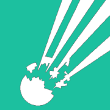

En tu cuenta GitHub, ve al repositorio que te gustaria monitorear y selecciona "settings".
Hace click en "Webhooks & services" y luego en el boton "Add webhook"
Ingresa el webhook generado abajo como "Payload URL".
Especifica el tipo de contenido como "application/json" y "todos los eventos"
Selecciona el boton "Add webhook" para terminar.